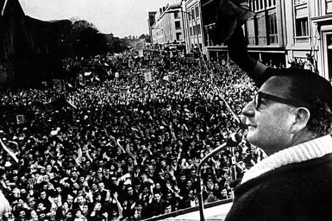

11 de septiembre de 2026: ¡La lucha continua!
Las juventudes de la izquierda institucional “reaparecieron” en el espacio público, algunas después de años de inactividad, mostrando que los afanes de las fuerzas de oposición de rearticularse como futura alternativa de salida al gobierno neofascista son reales, y que continúan firmes en su tarea de no permitir la conformación de una fuerza social de izquierda rupturista a la crisis social que se avecina.

1. Aspectos subjetivos: memoria que sobrepasa lo generacional
La conmemoración del 11 de septiembre de 2026 estuvo marcada por la decisión del gobierno de José Antonio Kast de no realizar ningún acto oficial, lo que constituyó un hecho inédito desde el retorno a la democracia en 1990. Esta omisión gubernamental, sin embargo, no impidió que la memoria se expresara con fuerza en las calles y espacios de memoria. Es más, podríamos decir que francamente a ninguna de las fuerzas político-sociales y de DDHH convocantes les importó. No era algo esperable, y como resulta lógico solo la "oposición" lo hizo notar.
Tanto fue así, que la propia ultraderecha pinochetista tuvo que salir a hacer escándalo con la fecha en la prensa patronal, ante el evidente desprecio de las fuerzas autoconvocadas. Esta actitud no es igual ni tiene la misma significación que las tibias declaraciones del expresidente Boric: "No necesitamos ceremonias oficiales para recordar la historia".
Es importante señalar que, precisamente, ante el mausoleo del compañero presidente Salvador Allende, el control de la escena no estuvo en manos de los bloques de base, los sindicatos clasistas o los colectivos autónomos, que iniciaron romerías desde distintos sectores de la ciudad, sino que fue liderado por la cúpula de los partidos políticos de la oposición institucional, con la presencia del expresidente y la propia familia Allende.
El diario y radio de la Universidad de Chile consignó que en la región metropolitana "más de 50 mil personas" repletaron el Sitio de Memoria Estadio Nacional, en una jornada que calificaron como una señal de que "aunque la institucionalidad quiera borrar la historia, la memoria colectiva y espontánea del pueblo se erige ante el negacionismo". Marcelo Acevedo, presidente de la Corporación Estadio Nacional Memoria Nacional, destacó que la ciudadanía eligió masivamente ese sitio de memoria, demostrando que la memoria no depende de actos oficiales.
Los encuentros populares fueron masivos en Antofagasta, Valparaíso, Santiago, Concepción y Valdivia.
La composición de los asistentes es reveladora: "Una mayoría de estudiantes secundarios y universitarios, una gran multitud de organizaciones de base y agrupaciones de izquierda clasista, también con gran presencia juvenil; familias completas, adultos mayores, organizaciones sociales, colectivos de mujeres, hinchas deportivos y federaciones". Esta diversidad etaria y social confirma que la memoria del golpe y la dictadura ha sobrepasado la cuestión generacional: no es un asunto exclusivo de quienes vivieron directamente esos años, sino que se ha transmitido y reactivado multitudinariamente en las nuevas generaciones. Pero más importante aún, la juventud y masividad de las manifestaciones indica que hay memoria histórica, una de las bases fundamentales para avanzar en procesos de reorganización popular.
Las demandas históricas de verdad y justicia; el rechazo a los indultos y contra la Megarreforma de Kast
Las demandas expresadas en las distintas actividades fueron claras y coincidentes en todas las regiones donde se dieron movilizaciones:
Las demandas históricas de Verdad y Justicia: que el Estado cumpla con su obligación fue central. La aparición de los Detenidos Desaparecidos: En el acto del Estadio Nacional se recordó que en Chile aún hay "1.092 detenidos desaparecidos, además de 377 ejecutados políticos sin entrega de cuerpos", que los condenados por violaciones a los DDHH y las fuerzas armadas y de orden se han negado a entregar.
Sin embargo, esta vez a las demandas históricas se sumaron las demandas de No a los indultos de violadores de DDHH, que busca impulsar la ultraderecha en el gobierno, y espontáneamente la necesidad de parar la Megarreforma del gobierno neofascista de Kast, que lleva directo a la ruina económica del país y los desposeídos.
2. Aspectos cuantitativos: mayoría de jóvenes y fuerzas políticas clasistas
En Santiago, la velatón del Estadio Nacional congregó a una multitud que los organizadores cifraron en más de 50 mil personas. La jornada también registró incidentes con detenidos en todo el país: Carabineros detuvo a siete personas, cinco de ellas estudiantes del Liceo Instituto Nacional, lo que confirma la presencia de jóvenes secundarios organizados.
La manifestación en la Alameda, convocada por "agrupaciones sindicales y antifascistas", fue reprimida por Carabineros con carros lanza aguas y lanza gases. Esta convocatoria mixta —sindical y antifascista— sugiere una articulación entre sectores juveniles radicalizados y organizaciones sociales.
En el norte grande, en la ciudad de Antofagasta el Circuito por la Memoria y la posterior marcha desde la Plaza Colón movilizó de forma masiva a la comunidad local, transformándose en el hito principal de protesta ciudadana de esa zona geográfica.
Valdivia destacó por ser una de las manifestaciones regionales más ruidosas e importantes en el sur. La marcha de la Casa de la Memoria hacia el Cementerio Municipal N°1 convocó a una gran multitud de organizaciones de base y agrupaciones de izquierda clasista, potenciada políticamente por la coincidencia con la visita presidencial a la Región de Los Ríos.
En Concepción, la convocatoria formalizada ante las autoridades de la Región del Biobío la solicitó la Agrupación Regional de Familiares de Detenidos Desaparecidos y Ejecutados Políticos, que encabezaron la marcha desde Plaza España.
El bloque principal que marchó por calle Barros Arana, hasta el acto político cultural en Tribunales, que en su momento cubrió las cuadras desde Castellón hasta Angol, estuvo compuesto por estudiantes universitarios, secundarios, organizaciones políticas clasistas, fuerzas de la oposición como las JJCC, la JS y el FA y activistas y agrupaciones de derechos humanos. Esta actividad a pesar de contar con los permisos pertinentes, fue duramente reprimida por Carabineros, con gases, agua y detenidos.
Fue notoria la ausencia de gremios laborales y el mundo del trabajo.
De cualquier modo estas fueron las movilizaciones más importantes, dándose además manifestaciones en todas las ciudades y poblados del país.
- Arica: Velatones y actos culturales de memoria en el memorial de los Derechos Humanos y en la Plaza Colón.
- Iquique: Romería hacia el Cementerio N°1 y actos conmemorativos organizados por agrupaciones de familiares en el memorial de la ciudad.
- Copiapó: Actos de reflexión, velatones y marchas pacíficas convocadas por organizaciones sociales en el centro de la ciudad.
- La Serena / Coquimbo: Concentraciones ciudadanas y encendido de velas en memoriales locales y en las afueras de los recintos universitarios.
- Rancagua: Marcha pacífica y despliegue de lienzos alusivos a los derechos humanos a lo largo de la Alameda de la ciudad.
- Talca: Actos culturales y concentraciones de agrupaciones de memoria frente a la Plaza de Armas y en recintos universitarios.
- Chillán: Romerías y homenajes en el Memorial de los Derechos Humanos del Cementerio Municipal.
- Temuco: Actos conmemorativos pacíficos frente al Memorial de los Detenidos Desaparecidos en el centro urbano y dependencias de la Universidad de La Frontera.
- Osorno: Velatones y concentraciones culturales en la Plaza de Armas organizadas por agrupaciones locales de derechos humanos.
- Puerto Montt: Homenajes, lectura de poesía y marchas pacíficas en el Memorial de los Derechos Humanos frente a la costanera.
3. Reaparición de fuerzas políticas juveniles de la izquierda neoliberal
Un aspecto que emerge de la cobertura es la reaparición de fuerzas juveniles de la izquierda institucional. En el acto del Cementerio General participaron "las juventudes políticas de los partidos de oposición" que formaron parte del homenaje con una declaración conjunta. En Punta Arenas se identificó explícitamente a militantes de las Juventudes Comunistas, la Juventud Socialista y el Frente Amplio, lo mismo ocurrió en Concepción, Antofagasta, Valdivia.
Esta presencia es significativa porque, como señala The Clinic, el mausoleo de Salvador Allende "fue el epicentro de las conmemoraciones", y la Fundación Salvador Allende —junto a los partidos de oposición— encabezó la ceremonia central en el Cementerio General. En ese acto, el expresidente Gabriel Boric reapareció públicamente acompañado de exministras como Camila Vallejo (PC), Carolina Tohá (PPD) y Maya Fernández (PS).
La declaración conjunta de las juventudes de los partidos de oposición sugiere un intento de rearticulación del ala juvenil de la izquierda institucional, que incluye a la Confech, que busca posicionarse frente al gobierno de Kast. Esto contrasta con su baja visibilidad durante el gobierno de Boric, cuando la izquierda estaba en el poder y las movilizaciones estudiantiles, principalmente secundarias, se dirigían, en gran medida, contra el propio gobierno.
4. El mundo del trabajo: ausencia en las marchas
El punto que emerge con mayor claridad de la revisión es la ausencia del mundo del trabajo organizado en las marchas conmemorativas. Aunque hubo convocatorias desde agrupaciones sindicales, no se registró una presencia masiva de trabajadores organizados en la Central Unitaria de Trabajadores (CUT) como bloque en las marchas regionales.
Las manifestaciones y marchas en Valparaíso y en la Alameda, fueron convocadas fundamentalmente por "agrupaciones sindicales clasistas y antifascistas". Los reportes no mencionan una convocatoria formal de la CUT ni de los grandes sindicatos del cobre, la salud o la educación. La tradicional "Ofrenda Floral en el Memorial de Detenidos Desaparecidos" y otros actos convocados por familiares y organizaciones de derechos humanos concentraron la atención, pero sin una presencia obrera significativa.
Esta ausencia es consistente con el análisis de que el mundo del trabajo habría optado por encuentros simbólicos o romerías como parte de las fuerzas de la oposición, como el Estadio Nacional o el Cementerio General, en lugar de sumarse a las marchas masivas. Los sindicatos y federaciones de trabajadores no aparecen como sujetos colectivos protagónicos en la conmemoración, no marchan o participan los asociados a los sindicatos y organizaciones gremiales, solo la representación de sus dirigencias. Lo que sugiere, no solo la incapacidad del sindicalismo tradicional de convocar y mantener la memoria de la dictadura y la violación de los DDHH en la organización sindical tradicional, sino también una desconexión entre las bases y sus dirigencias.
5. Corolario
La decisión de Kast de no realizar acto oficial, lejos de silenciar la memoria, la reactivó y desplazó la conmemoración hacia los espacios de memoria y las calles, con una fuerte impronta juvenil. Las juventudes de la izquierda institucional "reaparecieron" en el espacio público, algunas después de años de inactividad, mostrando que los afanes de las fuerzas de oposición de rearticularse como futura alternativa de salida al gobierno neofascista son reales, y que continúan firmes en su tarea de no permitir la conformación de una fuerza social de izquierda rupturista a la crisis social que se avecina.
Si bien las organizaciones clasistas y de la izquierda antisistémicas fueron protagonistas, lo fueron cada uno por su lado. Aquí está la tarea más importante del periodo para nuestras fuerzas, la capacidad que tengamos de confluir en un proceso organizativo con objetivos tácticos, más allá de marchas esporádicas aunque sean por hechos históricos. Pasar de diferencias ideológicas pueriles, y encontrar un quehacer que tenga por lo menos objetivos comunes. Este 11 de septiembre de 2026, a 53 años del Golpe de Estado contra el gobierno popular, con un gobierno neofascista en el poder, nos ha mostrado que existe un ethos común que persiste entre las fuerzas revolucionarias. De ahí hay que agarrarse compañeros.